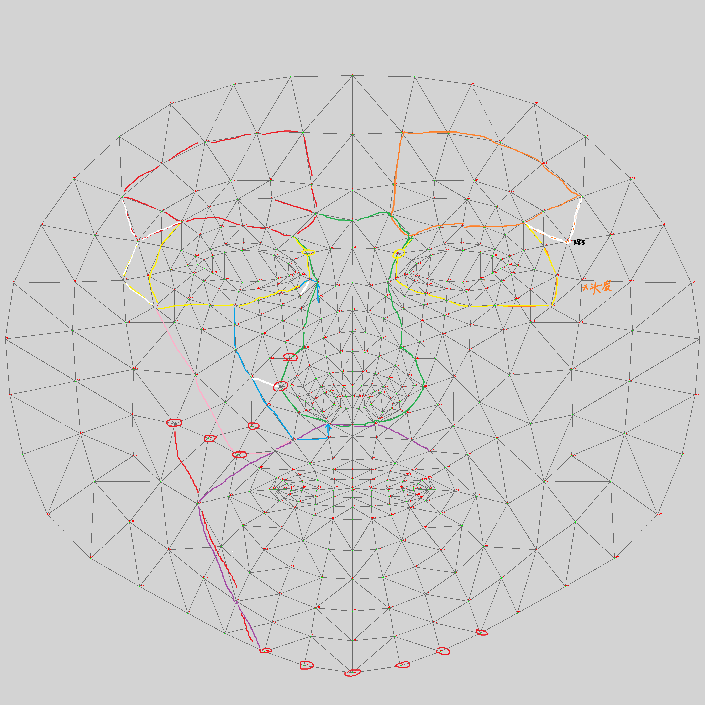

M / 01
Peel
IN B, M
OUT D, mask
α 合成的闭式反演，从素颜 / 上妆对中分离妆面层。 Closed-form inversion of alpha compositing; isolates the cosmetic layer from a bare / made-up pair.
impl: core/peel.py
基于高斯混合的妆面分解与笔触复演 pipeline。 A Gaussian-mixture pipeline for facial cosmetic decomposition and brushstroke replay.
本工作提出 Gaussian Makeup Replayer（GMR），一种将妆面图像分解为基于高斯混合的色号 palette、并以有序 brushstroke 序列在素颜目标上复演结果的方法。给定同一对象的素颜图像 B 与上妆图像 M，GMR 依次执行：(i) 反演 alpha 合成以恢复妆面层 D；(ii) 在 RGB 空间通过 K 分量 GMM 将 D 分解为 N 个基础色号；(iii) 基于关键点驱动的掩码将色号分配至语义化面部分区；(iv) 合成有序 brushstroke 复演序列。我们在多个 subject 与多种风格强度的输入妆面上给出定性结果，并在 GMR(p=0.70, N=6) 配置下报告重建 RMSE。
We present Gaussian Makeup Replayer (GMR), a method for decomposing facial cosmetic images into a Gaussian-mixture shade palette and replaying the result as an ordered brushstroke sequence on a bare-face target. Given a bare-face image B and a made-up image M of the same subject, GMR (i) inverts the alpha composite to recover the cosmetic layer D, (ii) decomposes D into N base shades via a K-component GMM in RGB space, (iii) assigns shades to semantic face regions via landmark-driven masks, and (iv) synthesizes an ordered brushstroke replay. We report qualitative results across multiple subjects at varying style intensities and reconstruction RMSE under the GMR(p=0.70, N=6) configuration.
选择 M1 / M2 / M3 三个 showcase 中的一个，上方播放该妆面在主对象 (showcase B) 上的逐笔触复演 (hover 播放)；下方的演示序列图片逐步介绍 GMR 运行的全部产物：原始素颜 B、上妆 M、分区边界、GMM palette、修剪后 palette、stroke regions、复演重建的妆面，以及用于对照的原始 M。点击任一图可放大查看，末尾给出该次重建的 RMSE。 Pick one of three showcases (M1 / M2 / M3): the player shows the look’s stroke-by-stroke replay on the showcase subject (hover to play), and the procedure demonstration series below walks through every artefact of that decompile — bare face B, made-up M, segmentation borders, GMM palette, trimmed palette, stroke regions, the replayed reconstruction, and the original M for comparison. Click any figure to enlarge; the per-look RMSE closes the series.
同一条 pipeline 在 BeautyGAN 数据集中数张其他 subject 上的输出。点击任一卡片展开其完整十列网格。 The same pipeline applied to additional subjects from the BeautyGAN dataset. Click any card to expand its full ten-column grid in place.
表 1 在 GMR(p=0.70, N=6) 配置下报告相对于输入 M 的重建 RMSE。RMSE 仅在 mask 内部统计，按 0–255 标度给出。 Table 1 reports reconstruction RMSE against input M under the GMR(p=0.70, N=6) configuration. RMSE is computed on the inside-mask region only, on the 0–255 scale.
GMR pipeline 包含五个阶段：颜料层抽取（§2.1）、分区分配（§2.2）、高斯混合解构（§2.3）、palette 修剪（§2.4）、与 brushstroke 复演（§2.5）。其中 §2.3 与 §2.5 为本工作的主要技术贡献。图 2 给出 pipeline 数据流图。 The GMR pipeline comprises five stages: pigment-layer extraction (§2.1), region assignment (§2.2), Gaussian-mixture decomposition (§2.3), palette trim (§2.4), and brushstroke replay (§2.5). §2.3 and §2.5 are the principal technical contributions of this work. Figure 2 illustrates the data flow.
我们将上妆图像 M 建模为素颜 B 与妆面层 D 的线性混合，p ∈ [0, 1] 表示裸肤可见比例。可推导得到 D 的闭式反解（详见 §4.1）。本工作固定 p = 0.70。对眼线、修容等深色妆品，D 出现负值；signed-D 变体保留该负值供下游可视化使用。
We model the made-up image M as a linear mixture of bare skin B and a cosmetic layer D, with p ∈ [0, 1] the visible bare-skin fraction. Solving for D yields a closed-form first-order inverse (§4.1). We fix p = 0.70. For dark cosmetics (eyeliner, contour), D contains negative entries; the signed-D variant retains them for downstream visualisation.
面部分区由 MediaPipe 提供的 468 关键点构造。每个区域为一组关键点上的凸包多边形；区域间重叠通过优先级 pixel-claiming 解决——优先级靠前的区域先认领像素，剩余像素留给后续区域。当前定义十一个不重叠区域：唇、鼻、唇周、左/右眉、左/右眼、左/右面中、左/右颊。 Face regions are derived from MediaPipe's 468 facial landmarks. Each region is defined as a convex-hull polygon over a fixed landmark set; overlaps between regions are resolved by priority claiming — earlier-priority regions claim contested pixels first, later ones receive the remainder. Eleven non-overlapping regions are currently defined: lips, nose, perioral, left/right brows, left/right eyes, left/right midface, left/right cheek.
关键点到区域边界的映射并非算法决定，而是设计决策。图 2.2a 是记录这些决策的手绘草图；图 2.2b 显示该设计在真实输入上经优先级裁剪后的落地结果。 The mapping from landmarks to region boundaries is design judgment, not algorithm. Figure 2.2a is the hand-drawn sketch recording those decisions; Figure 2.2b shows how the design lands on a real input after priority claiming.

在每个区域内，我们在 RGB 空间对 {D(x,y)} 拟合 K 分量高斯混合模型，逐像素得到各分量的软后验 α_k(x,y) 与分量均值 {c_k}。分量均值构成该区域的色号 palette；软后验构成每个色号的空间权重图。每区域 K 值由配置给出（K = 6 为默认；唇/眼等高色彩区域可单独提高）。
Within each region, we fit a K-component Gaussian mixture to {D(x,y)} in RGB space, recovering soft posteriors α_k(x,y) and component means {c_k} per pixel. The means form the per-region shade palette; the posteriors give per-shade weight maps. K is configurable per region (K = 6 default; lip / eye regions may use higher K).
我们选择 GMM 而非 k-means，因为下游 convex-combination 求解器依赖 α 空间的平滑插值。k-means 输出硬分配；经单纯形投影后，扩展的像素邻域会塌缩到单一 palette 顶点上，在 cluster 边界处产生可见的块状伪影。GMM 的连续后验恢复了该梯度，消除此伪影。GMM temperature 控制后验的锐度；其敏感性扫描列入 §6 Future Work。 GMM is chosen over k-means because the downstream convex-combination solver relies on smooth interpolation in α-space. K-means produces hard assignments; after simplex projection, extended pixel neighbourhoods collapse onto single palette vertices, producing visible block artefacts at cluster boundaries. GMM's continuous posteriors recover the gradient and eliminate this artefact. The GMM temperature controls posterior sharpness; sensitivity sweep is flagged in §6 Future Work.
原始 GMM palette 在进入复演前经过两步处理。(i) 打底色重排：在每个区域内将与该区域 bare-skin 均值在 RGB 上最接近的色号移至位置 0，使复演序列以"上底色"开始——这与人类化妆顺序一致，并为后续 stroke 提供基底参考。(ii) 可替代性分类：对每个色号检查能否被其余色号以非负线性组合在 ΔE_2000 容差内重构；可被重构的色号标记为 REPLACE，其余标记为 KEEP。REPLACE 色号在 §1 Results 的 merged palette 列以红色 ✕ 标出。
The raw GMM palette is processed in two steps before replay. (i) 打底色 reorder: within each region, the shade closest in RGB to the region's bare-skin mean is moved to position 0, so the replay begins with a base-tone application — matching how a human applies makeup and grounding the subsequent strokes. (ii) Replaceability classification: each shade is checked against whether it can be reconstructed as a non-negative combination of the others within a ΔE_2000 tolerance; reconstructable shades are marked REPLACE, the rest KEEP. REPLACE entries are marked with a red ✕ in the merged palette column of §1 Results.
当前 bare-skin proxy 取为 B 在该区域 mask 内的均值——粗略，且包含 B 在该区域内任何残留妆品和边界像素的影响。更干净的代理留作 Future Work（§6）。跨区域 palette 合并目前未启用。
The bare-skin proxy is the mean of B inside the region mask — crude, and contaminated by residual makeup in B and boundary pixels. A cleaner proxy is deferred to Future Work (§6). Cross-region palette merging is not currently applied.
给定修剪后的 palette {c_k} 与后验 α_k，step generator 通过 Porter-Duff 累积合成生成有序帧序列 E_0, …, E_N。直接以 α_k 作为每步可见覆盖率会让最终帧偏离目标——正确的每步覆盖率 λ_k 是 α_k 除以"该笔及之后所有层的残余贡献"。该推导（详见 §4.3）保证 E_N = M 在数学上严格相等。
Given the trimmed palette {c_k} and posteriors α_k, the step generator synthesises an ordered sequence of frames E_0, …, E_N via Porter-Duff cumulative compositing. Using α_k directly as per-step coverage drifts the final frame off-target — the correct visible coverage λ_k is α_k divided by the residual contribution of all later layers. The derivation (§4.3) guarantees E_N = M exactly.
MP4 可视化使用 KEEP-mode α 重分布：被分类为 REPLACE 的色号其 α 质量按非负线性方案分配到对应的 KEEP 色号上，使动画的每一帧对应一支必要产品的覆盖，而非 GMM 原始分量。该可视化将 brushstroke 的隐式离散性显式化。 The MP4 visualisation uses KEEP-mode α redistribution: α-mass from shades classified as REPLACE is allocated to their solution KEEPs by the same non-negative weights used in replaceability checking. Each animation frame therefore corresponds to one essential product, not one raw GMM component — making the implicit discreteness of brushstrokes explicit.
GMR 由四个顺序模块组成，模块间接口固定。每个模块都可单独运行；任一模块的实现可被替换，不影响其他模块。Indicator 可视化作为诊断工具单独提供，不在主流水线上。 GMR is structured as four sequential modules connected by fixed I/O contracts. Each module is independently runnable; any module's implementation may be replaced without modifying downstream consumers. Indicator visualisation is a diagnostic utility, not a load-bearing pipeline stage.
α 合成的闭式反演，从素颜 / 上妆对中分离妆面层。 Closed-form inversion of alpha compositing; isolates the cosmetic layer from a bare / made-up pair.
基于关键点的语义分区——不重叠、按优先级裁剪。十一个区域。 Landmark-driven semantic regions — non-overlapping, priority-claimed. Eleven regions.
每区域 GMM 拟合得到 N 个基础色号与软后验权重图。亦提供 TC-1 hull baseline 作为可选 backend。 Per-region GMM fit yielding N base shades and soft posterior weight maps. A TC-1 hull baseline is also available as an alternative backend.
λ 修正的 Porter-Duff 累积合成，保证末帧严格等于 M。亦输出 KEEP-mode 可视化所需的离散指标。 λ-corrected Porter-Duff cumulative compositing, guaranteeing E_N = M exactly. Also emits discrete indicators consumed by the KEEP-mode visualisation.
本节汇总在 §2 中引入的方程式以便引用。 This section consolidates the equations introduced inline in §2.
对 D 的每个像素：
For each pixel of D:
记 P_{k+1} 为第 k+1 到 N 层的残余贡献：
Let P_{k+1} denote the residual contribution of layers k+1 through N:
(5) 中 λ_k 的推导保证 E_N = M 严格相等。若直接以 α_k 替代 λ_k，最终帧将偏离目标。
The λ_k derivation in (5) ensures E_N = M exactly. Using α_k in place of λ_k drifts the final frame off-target.
D 中的负值与 palette 中的负色项。当前显示约定 display = clip(skin + palette·255, 0, 255) 在数学上自洽，但尚未在更大规模上验证。
Dark cosmetics produce negative entries in D and consequently negative palette entries. The current display convention display = clip(skin + palette·255, 0, 255) is consistent but unverified at scale.
下面沿三条正交的轴列出计划中的延伸方向：深化（当前数学建模的细化）、拓宽（适用范围的扩展）、与上层（相邻能力的衔接）。 Planned extensions are organised along three orthogonal axes: deeper (refinement of the current formulation), wider (broadening applicability), and higher (adjacent capabilities).
D 在 RGB 空间的散点可视化，用于 palette 抽取的诊断；
RGB-space scatter visualisation of per-region D for diagnostic inspection of palette extraction.
终端用户上传参考妆面，GMR 返回针对该用户素颜的个性化教程序列。可经微信小程序分发。 End user uploads a reference look; GMR returns a tutorial sequence tailored to the user's bare face. Distribution via WeChat mini-program.
化妆工作室对客户的参考照片做反编译，即时判断所需产品、时间估计与复现可行性。 Makeup artists decompose a client's reference photos to immediately determine required products, time estimates, and feasibility of reproduction.
化妆品品牌将定制妆面与产品组合绑定发售；QR 链接到 GMR 教程，向购买者展示如何用这些产品复现妆面。 Cosmetic brands ship a curated look paired with a product bundle; a QR-linked GMR tutorial shows the buyer how to reproduce the look using exactly those products.
若引用本工作，请使用如下格式： If this work is referenced, please cite:
@misc{gmr2026,
author = {JT. Z.},
title = {{GMR}: {G}aussian {M}akeup {R}eplayer},
year = {2026},
note = {Independent project},
url = {https://545411679.github.io/GMR-project-demo/}
}GMR 为作者独立完成的研究项目。关于方法、应用方向或合作的来信，请见以下方式。 GMR is an independent research project by the author. Correspondence regarding the method, applications, or collaboration is directed below.